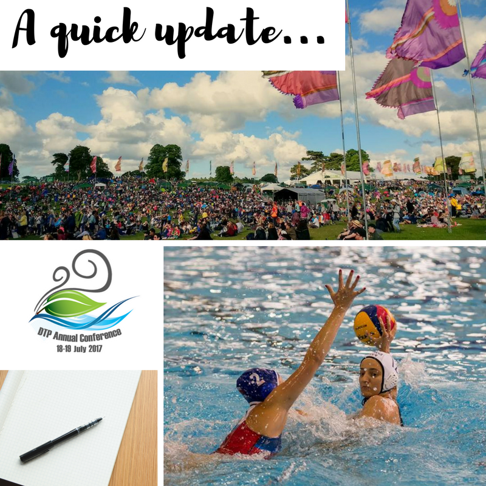

It has been a long while since my last post for no other reason than life got bit hectic. Hopefully this blog post will give me a chance to digest everything that has happened, or about to happen and give you a little sneak peak at future topics of discussion.
First things first, I finally managed to submit my paper to Atmospheric, Chemistry and Physics, which is currently in disucssion. "Maxwell-Stefan diffusion: a framework for predicting condensed phase diffusion and phase separation in atmospheric aerosol" is the first time the Maxwell-Stefan framework has been applied to an atmospheric aerosol core-shell model and shows that there is a complex interplay between the viscous and solubility effects on aerosol composition. Understanding aerosol composition is essential to accurately model their interactions within atmospheric systems. We use simple binary systems to demonstrate how viscosity and solubility both play a role in affecting the rate of diffusion through aerosol particles. There will definitely be a future blog on the journal article, however I just wanted to give you a flavour of what is to come.
Another exciting venture that has taken up a lot of time is the Annual EAO DTP Conference 2017. As a member of the conference committee I was involved in the organisation of the conference from January, by communicating with delagates, producing the website, organising a key note speaker, developing a social media plan and making general preparations for the day. On top of these tasks I presented a 12 minute oral presentation, my first one in a conference setting. I guess this may also be another blog post.
My girlfriend and I paired up to volunteer at the first Big Church Day Out: North, which is a big Christian music festival. Our task was to take care of artist liason for the Illuminate stage. The days were very long, the communication tasks took me out of my comfort zone and as my first Christian festival I did not know what to expect, however I would not have changed a single part of the weekend. Being there helping as part of a team with Adelaide let me experience all her wonderful talents first hand, the way she dealt with the artists, their entourage, problems that crept up and still kept the day running to time in a way that only she could. The festival had an amazing feeling all around with lots of love and happiness, even when the weather wasn't on our side. A personal highlight was meeting all Adelaide's friends from Brighton, learning a little bit more about her.
Final bit of exciting news, is that I have been selected to represent the British Universities water polo team at the world uiversity games in Taipei. It is a great honour to have anther opportunity represent my country and university on the international stage again after three years. This is the cumulation of hard work after a long season with the City of Liverpool, as the winning streak continued and we became British champions for the forth year in the row. I'm sure there will also be another blog post on the summer of water polo antics.